ArtifactsBench: Bridging the Visual-Interactive Gap in LLM Code Generation Evaluation
The generative capabilities of Large Language Models (LLMs) are rapidly expanding from static code to dynamic, interactive visual artifacts. This progress is bottlenecked by a critical evaluation gap: established benchmarks focus on algorithmic correctness and largely overlook the visual fidelity and interactive integrity that define modern user experiences. To bridge this gap, we introduce ArtifactsBench, a benchmark and automated, multimodal evaluation paradigm for visual code generation. Our framework renders each artifact and captures its dynamic behavior via temporal (three-step) screenshots. This visual evidence, alongside the source code, is then assessed by a Multimodal LLM (MLLM)-as-Judge, which is rigorously guided by a fine-grained, per-task checklist to ensure holistic and reproducible scoring. We curate 1,825 diverse tasks and evaluate over 30 leading LLMs. Our automated evaluation achieves 94.4% ranking consistency with WebDev Arena—a de facto gold standard for human preferences in web development—and up to 90.95% pairwise agreement with human experts. We open-source ArtifactsBench, including the benchmark, evaluation harness, and baseline results at https://artifactsbenchmark.github.io, to provide the community with a scalable and accurate tool to accelerate the development of user-centric generative models.
Large Language Models (LLMs) are reshaping software creation, extending from conventional code/text to interactive visual artifacts (Jaech et al., 2024; Anthropic, 2025; Guo et al., 2025). These enable responsive web interfaces, data visualizations, and mini-games (Jiang et al., 2024; Lu et al., 2025a). We term an “Artifact” a self-contained, model-generated, executable unit (e.g., web widget, visualization) that integrates code, visuals, and interaction. Despite strong generative capability, rigorous evaluation lags: current tools do not holistically judge visual fidelity and dynamics, forming a bottleneck. WebDev Arena captures human preferences via voting but requires manual evaluation and is difficult to scale (LMSYS Org, 2024). Specifically, the “multimodal instructions” encompass text, images, and interaction logic, while the “interactive visual artifacts” refer to the executable outputs designed and generated based upon these instructions.
大语言模型（LLM）正在重塑软件创作，其能力已从传统的代码与文本扩展到交互式视觉制品（Jaech et al., 2024; Anthropic, 2025; Guo et al., 2025）。这些模型能够生成响应式网页界面、数据可视化与小游戏（Jiang et al., 2024; Lu et al., 2025a）。我们把“Artifact”（制品）定义为一个自包含的、由模型生成的、可执行的单元（如网页组件、可视化图表），它把代码、视觉与交互融为一体。尽管生成能力强大，严谨的评测却相对滞后：现有工具无法对视觉保真度与动态行为做出整体性判断，由此形成瓶颈。WebDev Arena 通过投票捕捉人类偏好，但需要人工评测，难以规模化（LMSYS Org, 2024）。具体地，“多模态指令”涵盖文本、图像与交互逻辑，而“交互式视觉制品”指基于这些指令设计并生成的可执行输出。
Prevailing benchmarks emphasize static correctness (e.g., pass@k in HumanEval (Chen et al., 2021)) or non-visual functionality (e.g., SWE-Bench (Jimenez et al., 2023)); visual code generation is typically judged via screenshot replication (Wüst et al., 2024; Yun et al., 2024; Wu et al., 2024) or DOM proxies (Xu et al., 2025). None capture the holistic quality of interactive artifacts—layout/aesthetics and dynamic behaviors (responses, state transitions, animations) are under-measured, so evaluation often falls back to costly, subjective manual inspection or unreliable LLM self-evaluation, lacking scale and objectivity. This gap is critical because high-fidelity, functional interactive visual artifacts are central to user experience in modern applications; their quality directly affects real-world adoption.
主流基准强调静态正确性（如 HumanEval 中的 pass@k（Chen et al., 2021））或非视觉功能（如 SWE-Bench（Jimenez et al., 2023））；视觉代码生成通常通过截图复现（Wüst et al., 2024; Yun et al., 2024; Wu et al., 2024）或 DOM 代理指标（Xu et al., 2025）来评判。这些方法都无法刻画交互式制品的整体质量——版式与美学、动态行为（响应、状态转移、动画）都被低估，评测因而常常退回昂贵且主观的人工检查，或不可靠的 LLM 自评，既缺乏规模也缺乏客观性。这一缺口至关重要，因为高保真、可用的交互式视觉制品是现代应用用户体验的核心，其质量直接影响真实场景中的采纳。
We ask a central question: How can we automatically, holistically, and reliably evaluate an LLM’s ability to transform multimodal instructions—spanning text, images, and interaction logic—into high-quality, executable interactive visual artifacts across diverse prompts? Existing efforts provide partial answers. WebBench emphasizes DOM alignment and task automation; WebGen-Bench and FullFront target web comprehension/generation and the development process; and WebDev Arena captures human preferences through head-to-head voting (Xu et al., 2025; Lu et al., 2025b; Sun et al., 2025; LMSYS Org, 2024). Yet none jointly assess visual fidelity and interaction dynamics in a fully automated, scalable, and code-aware manner, nor do they provide reproducible, fine-grained diagnostics that reveal strengths and failure modes. A viable framework must therefore go beyond static code to assess functionality, visual presentation, and interactive behavior captured via staged execution (e.g., three-step screenshots), and provide fine-grained diagnostics to guide progress.
我们提出一个核心问题：如何自动、整体且可靠地评测 LLM 把多模态指令（涵盖文本、图像与交互逻辑）转化为高质量、可执行的交互式视觉制品的能力，并覆盖多样化的提示？已有工作给出了部分答案。WebBench 强调 DOM 对齐与任务自动化；WebGen-Bench 与 FullFront 面向网页理解/生成与开发流程；WebDev Arena 通过对抗式投票捕捉人类偏好（Xu et al., 2025; Lu et al., 2025b; Sun et al., 2025; LMSYS Org, 2024）。然而它们都没有以全自动、可扩展且代码感知的方式联合评估视觉保真度与交互动态性，也未提供可复现的细粒度诊断来揭示优势与失效模式。因此，一个可行的框架必须超越静态代码，去评估功能性、视觉呈现，以及通过分阶段执行（如三步截图）捕捉到的交互行为，并提供细粒度诊断以指引改进方向。
Therefore, we introduce ArtifactsBench, a benchmark for evaluating LLMs on interactive visual artifacts. Our design couples deterministic execution with staged visual evidence and checklist-guided, dual-referee judging, enabling holistic, automated, and reproducible evaluation with strong human alignment. We curate 1,825 tasks via a multi-stage pipeline combining expert sourcing with LLM generation and refinement. As shown in Figure 1 and Table 1, tasks span nine domains and are stratified by complexity for fine-grained capability analysis. Our contributions are threefold:
为此，我们提出 ArtifactsBench，一个面向交互式视觉制品的 LLM 评测基准。我们的设计把确定性执行、分阶段视觉证据与清单引导的双评审机制结合起来，使评测具备整体性、自动化、可复现性，并与人类判断高度一致。我们通过融合专家采集与 LLM 生成—精修的多阶段流程，构建了 1,825 个任务。如图 1 与表 1 所示，任务覆盖九个领域，并按复杂度分层，以支持细粒度的能力分析。我们的贡献有三个方面：
The first large-scale, hierarchical benchmark for interactive visual artifacts. ArtifactsBench contains 1,825 queries across nine domains (e.g., web, SVG, games, simulations; Figure 1), stratified into Easy/Medium/Hard tiers for discriminative evaluation. This design supports fine-grained capability analysis rather than a single static-correctness score.
• 首个面向交互式视觉制品的大规模层次化基准。ArtifactsBench 包含覆盖九个领域（如网页、SVG、游戏、仿真；图 1）的 1,825 条查询，并划分为简单/中等/困难三个层级，以获得有区分度的评测结果。这一设计支持细粒度的能力分析，而非给出一个静态正确性的总分。
A multimodal, automated evaluation pipeline with checklist-guided MLLM-as-Judge. We execute artifacts in a sandbox, capture three sequential screenshots of interaction, and score against task-specific 10-dimension checklists using an MLLM referee (dual-referee: Gemini-2.5-Pro and Qwen2.5-VL-72B) (Zheng et al., 2023; Ge et al., 2023; Zhang et al., 2025). The pipeline measures visual fidelity, interactive correctness, and code quality.
• 具备清单引导的“以多模态大语言模型为评审”的多模态自动评测流程。我们在沙箱中执行制品，捕捉交互过程中的三张连续截图，并由多模态大语言模型评审（双评审：Gemini-2.5-Pro 与 Qwen2.5-VL-72B）依据任务专属的十维检查清单打分（Zheng et al., 2023; Ge et al., 2023; Zhang et al., 2025）。该流程度量视觉保真度、交互正确性与代码质量。
Strong human alignment and diagnostic insights. We evaluate 30+ LLMs, conduct a 280-instance expert study with pairwise agreement up to 90.95%, and achieve 94.4% ranking consistency with WebDev Arena. The analysis reveals systematic failure modes on intensive-interactive tasks and the insight that instruction-tuned generalist models often outperform specialist ones in this multimodal creative setting.
• 强人类一致性与诊断性洞察。我们评测了 30 余个 LLM，开展了包含 280 个实例的专家研究，两两一致率最高达 90.95%，并与 WebDev Arena 取得 94.4% 的排名一致性。分析揭示了模型在强交互任务上的系统性失效模式，并给出了一个洞见：在这一多模态创作场景中，经指令微调的通用模型往往优于专用模型。
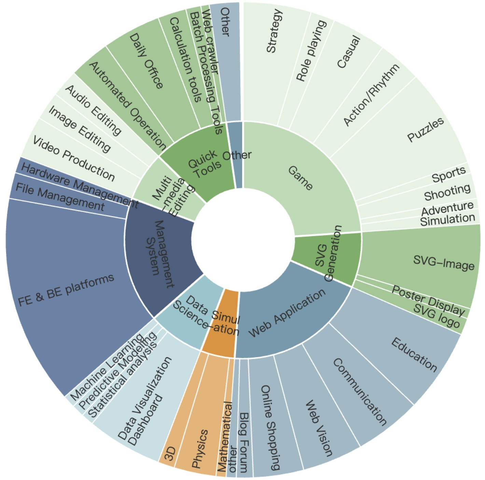
图 1：ArtifactsBench 的分布。
| Statistics | Number | Statistics | Number |
|---|---|---|---|
| #Problems | 1825 | Length | |
| Primary Topics | Question Length | ||
| ◦ Game | 413 | - max length | 32726 |
| ◦ SVG Generation | 123 | - min length | 184 |
| ◦ Web Application | 441 | - avg length | 524.9 |
| ◦ Simulation | 75 | CheckList Length | |
| ◦ Data Science | 122 | - all max length | 1111 |
| ◦ Management System | 314 | - all min length | 95 |
| ◦ Multimedia Editing | 118 | - all avg length | 522.0 |
| ◦ Quick Tools | 179 | - visual avg length | 549.1 |
| ◦ Others | 40 | - no-visual avg length | 494.9 |
表 1：ArtifactsBench 的数据集统计。
ArtifactsBench comprises 1,825 executable queries covering nine primary topics (Figure 1): “Game Development”, “SVG Generation”, “Web Applications”, “Simulations”, “Data Science”, “Management Systems”, “Multimedia Editing”, “Quick Tools”, and “Others”.
ArtifactsBench 由 1,825 条可执行查询组成，覆盖九大主题（图 1）：“游戏开发”“SVG 生成”“Web 应用”“仿真模拟”“数据科学”“管理系统”“多媒体编辑”“快捷工具”与“其他”。
Tasks are stratified into Easy/Medium/Hard with a target 30%/40%/30% split, assigned post hoc by aggregated performance of 30+ LLMs to preserve discriminative power. Sub-categories enable finer-grained analysis; prompts appear in Appendix 13.
任务被划分为简单/中等/困难三档，目标比例为 30%/40%/30%，该划分由 30 余个 LLM 的聚合表现事后确定，以保留区分度。子类别支持更细粒度的分析；提示词见附录 13。
| Benchmark | Data Size | Data Source | Primary Task | GR | CHA | AF | VE |
| Humaneval (Chen et al., 2021) | 164 | Human-Written | Algorithmic Tasks | Low | High | ✓ | |
| SWE-Bench (Jimenez et al., 2023) | 2,294 | GitHub Issues | Repository-level Bug Fixing | Low | High | ✓ | |
| WebBench (Xu et al., 2025) | 1,000 | Human-Written | Web Task Automation | Mid | Mid | ✓ | |
| WebGen-Bench (Lu et al., 2025b) | 101 Instructs | Human & GPT-4 | Web Page Generation | Mid | Mid | ✓ | ✓ |
| WebChoreArena (Miyai et al., 2025) | 532 | Curated Tasks | Web Automation (No UI) | Mid | Mid | ✓ | |
| FullFront (Sun et al., 2025) | 1,800 QA | Model-Synthesized | Web Comprehension/Generation | Mid | Mid | ✓ | ✓ |
| WebDev Arena (LMSYS Org, 2024) | N/A | User-Prompts | Web Design (Human Vote) | Low | High | ✓ | |
| ArtifactsBench (Ours) | 1,825 | Self-Constructed | Interactive Visual Artifacts | High | High | ✓ | ✓ |
表 2：与已有基准的对比。ArtifactsBench 首次同时实现高细粒度（GR）、强人类一致性（CHA）、自动化（AF）与直接视觉评测（VE）。
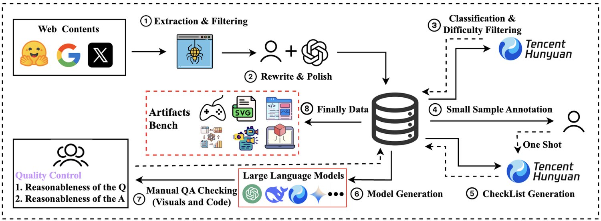
图 2：ArtifactsBench 数据构建流程概览。
We aim for ArtifactsBench to be diverse, interactive-first, and rigorously calibrated. Our pipeline (Figure 2) is designed to ensure (i) rich dynamics and real interactivity, (ii) clean and traceable provenance, (iii) strict de-duplication/contamination control, and (iv) reproducibility via standardized execution and checklist-guided judging.
我们希望 ArtifactsBench 具备多样性、交互优先与严格校准三个特性。我们的流程（图 2）旨在确保：（i）丰富的动态性与真实的交互性；（ii）干净可追溯的来源；（iii）严格的去重与污染控制；（iv）通过标准化执行与清单引导的评审实现可复现性。
Sourcing & filtering. We aggregate candidates from expert showcases, open SVG/web-snippet datasets, web case studies, and LLM visual-to-query from screenshots. Automated filters drop incomplete, non-visual, license-violating, duplicate, trivial, or non-interactive items, prioritizing dynamics (state changes, animations, responsiveness). The curated pool seeds further expansion.
来源采集与过滤。我们从专家示例、开放的 SVG/网页片段数据集、网页案例研究，以及由截图生成查询的 LLM 视觉转查询通道汇集成候选集。自动过滤器剔除不完整、非视觉、违反许可、重复、过于简单或无交互的条目，并优先保留动态性（状态变化、动画、响应式）。经筛选的候选池进一步用于扩充。
De-duplication & contamination control. Two-stage filtering: (i) MinHash + semantic similarity over prompts, checklists, and normalized DOM/CSS/JS; (ii) screenshot perceptual hashing to catch visually near-identical artifacts. Flagged items are re-authored or discarded.
去重与污染控制。采用两阶段过滤：（i）对提示词、检查清单以及归一化后的 DOM/CSS/JS 做 MinHash 与语义相似度计算；（ii）对截图做感知哈希，以捕捉视觉上近乎相同的制品。被标记的题目会被重新改写或丢弃。
Prompt rewriting & difficulty calibration. Experts rewrite for clarity/completeness/executability; LLM rewriting adds diverse styles; humans verify. Difficulty is assigned post hoc by aggregated performance of 30+ models to enforce 30%/40%/30%; realized split 559/611/655, stable under leave-family-out resampling. Sub-categories are tagged by a lightweight classifier with human spot-checks (Appendix 13, 14).
提示词改写与难度校准。专家对提示词做改写，以提升清晰性、完整性与可执行性；LLM 改写则增添多样的表述风格；最后由人工核验。难度由 30 余个模型的聚合表现事后确定，强制满足 30%/40%/30% 的比例；实际划分为 559/611/655，在“留一族”重采样下保持稳定。子类别由轻量分类器标注，并进行人工抽检（附录 13、14）。
Checklist generation & calibration. Each query is paired with a 10-dimension checklist covering visual, interactional, and code qualities. We LLM-draft and then human-refine for specificity and screenability. A 10% manually curated seed anchors calibration and achieves Cohen’s among annotators; the seed is reused as few-shot references to keep difficulty high and rubrics consistent. The 10 items are grouped into five vision-oriented and five code-oriented dimensions to support diagnostic analysis (Sec. 3).
检查清单生成与校准。每条查询都配有一份十维检查清单，覆盖视觉、交互与代码三方面的质量。清单先由 LLM 起草，再由人工精修，以确保具体且可筛查。10% 的人工精选种子集用于锚定校准，标注员间的 Cohen's 达到要求水平；该种子集被复用为少样本参考，以保持较高难度与评分标准的一致性。这 10 个条目被归为五个视觉导向维度与五个代码导向维度，以支持诊断分析（第 3 节）。
Solvability validation & ambiguity repair. To ensure tasks are answerable and unambiguous, we collect candidate solutions from multiple families and prune underspecified items. Tasks solved only by brittle hacks (e.g., hard-coded coordinates that break under minor viewport changes) are revised or removed. We prefer prompts that admit multiple acceptable yet checkable implementations.
可解性验证与歧义修复。为确保任务可作答且无歧义，我们从多个模型族收集候选解答，并剪除定义不充分的题目。那些只有靠脆弱技巧才能通过的任务（例如硬编码坐标，在视口发生微小变化时即失效）会被修订或移除。我们更偏好允许多种可接受且可核验实现的提示词。
Execution harness & screenshot policy. We standardize execution with headless Chromium (Playwright) at resolution and deterministic seeds. We capture three staged screenshots (before/during/after scripted interaction) to summarize interaction trajectories so that dynamic feedback and state transitions are evidenced compactly. The same harness is used across models.
执行环境与截图策略。我们以无头 Chromium（Playwright）在 分辨率下配合确定性随机种子来标准化执行。我们捕捉三张分阶段截图（脚本化交互之前/之中/之后）以概括交互轨迹，从而用紧凑的方式为动态反馈与状态转移提供证据。所有模型共用同一套执行环境。
Statistics & coverage. ArtifactsBench totals 1,825 queries across nine topics (Figure 1; Table 1), with a target Easy/Medium/Hard 30/40/30 split materialized as 559/611/655. Prompts and checklists emphasize executable code and observable interaction; purely static items are retained when visual fidelity or structured graphics are the primary goals (e.g., SVG posters).
统计与覆盖。ArtifactsBench 共含 1,825 条查询，覆盖九个主题（图 1、表 1），简单/中等/困难的目标比例 30/40/30 落实为 559/611/655。提示词与检查清单强调可执行代码与可观测的交互；当视觉保真度或结构化图形本身就是主要目标时（如 SVG 海报），纯静态条目也会被保留。
To overcome single-metric bias and faithfully capture interaction, we introduce an automated, multi-faceted evaluation framework (Figure 3). The framework targets (i) score consistency, defined as stable, reproducible per-query judgments across runs and referees, and (ii) rank fidelity, defined as agreement of model orderings with human preferences, evaluated over queries spanning multiple model families. Concretely, we execute each artifact in a standardized sandbox and capture three staged screenshots that summarize the interaction trajectory. We first validate the automatic referee via a 280-instance, six-model human study, demonstrating high pairwise agreement (targeting 90%). After establishing referee reliability, we evaluate all models at scale and verify that the resulting rankings align strongly with WebDev Arena (Figures 7, 8); full settings, cross-judge analysis (including Gemini-2.5-Pro and Qwen2.5-VL-72B), and ablations appear in the appendix.
为克服单一指标的偏差并忠实捕捉交互过程，我们提出一个自动化的多面评测框架（图 3）。该框架追求两个目标：（i）分数一致性，指同一查询在多次运行与不同评审之间得到稳定、可复现的判断；（ii）排序保真度，指模型排序与人类偏好的一致程度，评测覆盖跨多个模型族的 条查询。具体地，我们在标准化沙箱中执行每个制品，并捕捉三张分阶段截图来概括交互轨迹。我们先通过一项包含 280 个实例、6 个模型的人工研究验证自动评审的可靠性，证明其具有很高的两两一致率（目标 90%）。在确立评审可信度之后，我们再对所有模型做规模化评测，并验证所得排序与 WebDev Arena 高度吻合（图 7、8）；完整设置、跨评审分析（含 Gemini-2.5-Pro 与 Qwen2.5-VL-72B）以及消融实验见附录。
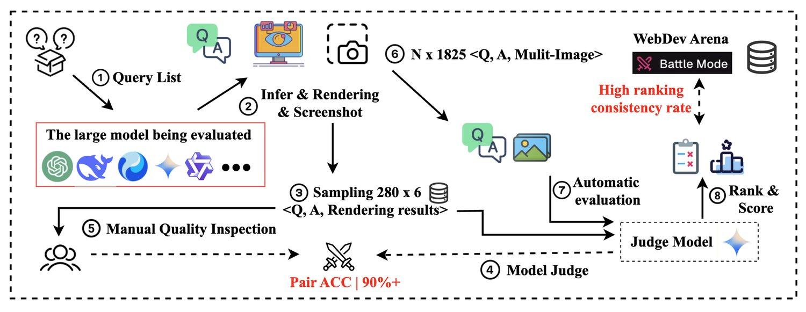
图 3：ArtifactsBench 评测流程。该流程以两阶段评测为核心：（第 5 步）先在一组受控任务上确认“以多模态大语言模型为评审”的方案与人类专家具有很高的两两打分一致率，从而验证其可靠性；（第 6 步）在可靠性确立后，再把自动评审大规模部署到整个基准上，评测所有模型的输出。最终的排名会与 WebDev Arena 交叉验证，以确保其与真实用户在视觉质量上的偏好相一致。
We use bespoke checklists covering ten dimensions (e.g., functionality, robustness, engineering practices, redundancy, creativity, aesthetics, user experience). Checklists are generated by Hunyuan-Turbos and human-refined; checklist-generation prompts appear in Appendix Figures 15, 16, and final scoring prompts in Figure 17. Each dimension is scored on 10-point scales with detailed rubrics, penalizing redundancy and rewarding innovation; code-level checks (robustness, scalability, performance) reveal issues beyond visual inspection. For balanced assessment and clearer diagnostics, we group ten items into five vision-oriented and five code-oriented dimensions. Concretely, vision-oriented criteria refer to qualities manifesting in rendered appearance and interaction affordances (layout structure, visual fidelity, motion timing, feedback, UX clarity), while code-oriented criteria evaluate properties visible from code behavior or structure (correctness of logic, robustness to inputs, modularity/engineering hygiene, scalability/performance, and redundancy avoidance).
我们为每条查询定制检查清单，覆盖十个维度（如功能性、鲁棒性、工程实践、冗余、创造性、美观性、用户体验）。清单由 Hunyuan-Turbos 生成并经人工精修；清单生成提示见附录图 15、16，最终打分提示见图 17。每个维度采用 10 分制并配详细评分细则，对冗余予以扣分，对创新予以加分；代码层面的检查（鲁棒性、可扩展性、性能）能揭示肉眼观察无法发现的问题。为实现均衡评估与更清晰的诊断，我们把这十个条目归为五个视觉导向维度与五个代码导向维度。具体地，视觉导向标准指在渲染外观与交互可供性上表现出来的性质（版式结构、视觉保真度、动效时序、反馈、用户体验清晰度），而代码导向标准则评价从代码行为或结构可见的性质（逻辑正确性、对输入的鲁棒性、模块化与工程规范性、可扩展性/性能、以及冗余规避）。
In contrast to conventional evaluations relying on static code or a single screenshot, our protocol couples interactive evidence with code-aware judging. To make assessment both interactive and reliable, we (i) robustly isolate executable snippets from the model’s raw output; (ii) execute in a sandbox and capture three staged screenshots (before/during/after interaction) that summarize the interaction trajectory; and (iii) provide temporal evidence, the original task, the model’s full answer, and a fine-grained checklist to the referee model to produce holistic, reproducible scores. The referee aligns visual evidence with task intent and, informed by answer content, audits properties that screenshots alone cannot reveal (e.g., logic correctness, robustness to inputs, modularity/engineering hygiene, and redundancy). This yields consistent judgments across vision- and code-oriented dimensions.
与依赖静态代码或单张截图的常规评测不同，我们的方案把交互证据与代码感知的判断结合起来。为使评测兼具交互性与可靠性，我们：（i）从模型原始输出中稳健地隔离出可执行代码片段；（ii）在沙箱中执行，并捕捉三张分阶段截图（交互前/中/后）以概括交互轨迹；（iii）把时序证据、原始任务、模型的完整回答以及细粒度检查清单一并交给评审模型，以产生整体、可复现的分数。评审模型把视觉证据与任务意图对齐，并借助回答内容审查单靠截图无法揭示的性质（如逻辑正确性、对输入的鲁棒性、模块化与工程规范性、冗余情况）。如此可在视觉导向与代码导向两类维度上得到一致的判断。
To enhance reproducibility and robustness, we adopt a dual-referee setup: the open-source Qwen2.5-VL-72B and the proprietary Gemini-2.5-Pro. The two referees induce highly consistent partial-order constraints over model rankings, and replacing the deprecated Gemini-2.5-Pro-Preview-0506 preview with the stable Gemini-2.5-Pro leaves our conclusions unchanged. Full settings, cross-judge comparisons, and leaderboards appear in Sec. 4 and the appendix.
为提升可复现性与鲁棒性，我们采用双评审设置：开源的 Qwen2.5-VL-72B 与闭源的 Gemini-2.5-Pro。两名评审在模型排名上导出的偏序约束高度一致；把已弃用的 Gemini-2.5-Pro-Preview-0506 预览版替换为稳定的 Gemini-2.5-Pro 后，我们的结论保持不变。完整设置、跨评审对比与排行榜见第 4 节与附录。
We conduct all evaluations in a sandboxed environment with deterministic seeds and fixed rendering settings. Execution uses Playwright (headless Chromium) to render artifacts at a resolution of , capturing three staged screenshots (before, during, and after interaction). Each model is prompted with identical instructions; we apply consistent decoding parameters (temperature and top-p tuned per official recommendations; max tokens sufficient to prevent truncation) and enforce a uniform per-query time budget. Baselines are selected to span (i) multiple families (Qwen2.5/3 (Yang et al., 2024; Yang et al., 2025), DeepSeek (Guo et al., 2025; Liu et al., 2024a), Gemma/GPT/Claude/Gemini (Team et al., 2025; OpenAI, 2023; Anthropic, 2025; Gemini Team & Google, 2023), Seed (Seed et al., 2025), Hunyuan (Liu et al., 2025)), (ii) a range of sizes (from small to flagship), and (iii) modality/training styles (instruction-tuned generalists, coder-specialized, and VL-capable models), ensuring breadth, recency, and reproducibility.
全部评测都在带有确定性随机种子与固定渲染设置的沙箱环境中进行。执行环节使用 Playwright（无头 Chromium）以 分辨率渲染制品，并捕捉三张分阶段截图（交互前、交互中、交互后）。各模型使用完全相同的指令；我们采用一致的解码参数（temperature 与 top-p 按官方建议调整；max tokens 足够长以避免截断），并对每条查询施行统一的时间预算。基线模型的选择覆盖三个维度：（i）多个模型族（Qwen2.5/3（Yang et al., 2024; Yang et al., 2025）、DeepSeek（Guo et al., 2025; Liu et al., 2024a）、Gemma/GPT/Claude/Gemini（Team et al., 2025; OpenAI, 2023; Anthropic, 2025; Gemini Team & Google, 2023）、Seed（Seed et al., 2025）、Hunyuan（Liu et al., 2025））；（ii）从小型到旗舰的多种规模；（iii）不同的模态与训练风格（指令微调的通用模型、代码专用模型与具备视觉语言能力的模型），以保证覆盖面、时效性与可复现性。
Building on Sec. 3, we evaluate over 30 models using our automated pipeline and dual-referee protocol, analyzing performance across interactivity levels and task categories.
在第 3 节的基础上，我们用自动评测流程与双评审方案评测了 30 余个模型，并分析其在不同交互强度与任务类别上的表现。
| MODEL | IFLEN | SCORE | |||||||||
| SV | MMD | HD | II | GAME | SVG | WEB | SI | MS | AVG | ||
| Open-Source Large Language Models | |||||||||||
| Qwen2.5-7B-Instruct | 7905.21 | 29.60 | 26.92 | 29.68 | 24.65 | 24.26 | 23.22 | 29.99 | 23.86 | 28.31 | 27.35 |
| Qwen2.5-14B-Instruct | 6334.34 | 32.07 | 31.93 | 32.83 | 27.85 | 27.73 | 27.89 | 32.77 | 28.11 | 30.57 | 30.49 |
| Qwen2.5-32B-Instruct | 5115.49 | 34.45 | 31.37 | 34.37 | 29.37 | 30.52 | 32.36 | 33.60 | 28.23 | 30.35 | 32.07 |
| Qwen2.5-72B-Instruct | 6029.47 | 35.81 | 35.01 | 36.84 | 32.16 | 33.71 | 34.49 | 36.21 | 29.96 | 33.12 | 34.51 |
| Qwen2.5-VL-72B | 3539.15 | 34.37 | 33.71 | 34.70 | 27.93 | 29.70 | 33.84 | 33.12 | 31.25 | 30.10 | 31.69 |
| Qwen-2.5-Coder7B-Instruct | 5800.23 | 25.58 | 25.80 | 28.80 | 24.34 | 25.21 | 20.58 | 28.56 | 24.49 | 26.27 | 26.01 |
| Qwen-2.5-Coder32B-Instruct | 6318.59 | 37.12 | 36.42 | 37.69 | 32.61 | 32.93 | 33.59 | 37.16 | 34.69 | 33.97 | 35.32 |
| QwQ-32B | 20232.53 | 44.01 | 41.64 | 41.92 | 38.22 | 38.96 | 43.08 | 41.74 | 40.17 | 39.37 | 40.79 |
| Qwen3-4B | 35479.79 | 35.55 | 35.57 | 35.40 | 29.28 | 30.88 | 32.83 | 35.05 | 33.07 | 31.47 | 32.84 |
| Qwen3-8B | 22319.97 | 38.88 | 37.84 | 38.51 | 33.74 | 34.58 | 36.37 | 38.08 | 36.15 | 35.92 | 36.52 |
| Qwen3-14B | 15118.26 | 41.34 | 41.63 | 41.68 | 37.42 | 38.65 | 39.50 | 41.22 | 38.68 | 38.67 | 39.79 |
| Qwen3-32B (Instruct) | 17394.15 | 44.39 | 43.79 | 44.65 | 39.05 | 41.85 | 43.44 | 43.34 | 40.79 | 39.84 | 42.16 |
| Qwen3-30B-A3B (Instruct) | 15772.52 | 42.49 | 40.95 | 42.34 | 37.16 | 39.98 | 42.27 | 41.54 | 38.43 | 37.15 | 40.08 |
| Hunyuan-A13B | 17831.15 | 44.80 | 44.64 | 44.22 | 40.88 | 42.30 | 47.31 | 44.56 | 39.17 | 41.23 | 42.95 |
| Qwen3-253B-A22B (Instruct) | 19400.61 | 47.42 | 46.09 | 46.16 | 41.89 | 44.03 | 47.04 | 45.85 | 43.97 | 42.41 | 44.62 |
| DeepSeek-distill-qwen-32B | 9249.36 | 36.48 | 37.50 | 37.47 | 32.24 | 34.51 | 35.52 | 36.92 | 35.35 | 33.17 | 35.04 |
| Seed-Coder-8B-Instruct | 8934.07 | 36.76 | 37.10 | 37.69 | 32.47 | 34.76 | 36.29 | 36.62 | 33.21 | 32.73 | 35.23 |
| Gemma3-12B-it | 7955.42 | 38.90 | 34.56 | 37.53 | 32.58 | 33.06 | 35.72 | 37.72 | 31.97 | 35.36 | 35.53 |
| Gemma3-27B-it | 7912.14 | 39.97 | 37.63 | 38.80 | 34.54 | 35.62 | 37.18 | 38.65 | 34.49 | 36.01 | 37.16 |
| DeepSeek-V3 | 4518.74 | 38.23 | 37.99 | 37.87 | 32.48 | 34.31 | 37.09 | 37.23 | 34.87 | 33.43 | 35.67 |
| DeepSeek-R1 | 10754.69 | 47.17 | 46.75 | 46.95 | 41.44 | 44.18 | 47.01 | 45.58 | 41.85 | 42.40 | 44.64 |
| DeepSeek-V3-0324 | 11455.42 | 47.78 | 44.43 | 48.53 | 42.55 | 47.58 | 46.34 | 47.47 | 38.71 | 42.88 | 45.56 |
| DeepSeek-R1-0528 | 20780.42 | 51.18 | 53.65 | 51.92 | 51.33 | 51.78 | 52.87 | 50.66 | 50.27 | 45.51 | 51.62 |
| Closed-Source Large Language Models | |||||||||||
| Seed-thinking-1.5 | 14823.72 | 49.16 | 48.36 | 49.84 | 45.90 | 47.59 | 47.86 | 49.61 | 49.81 | 45.81 | 47.92 |
| GPT-4o | 4883.8926 | 40.60 | 37.74 | 40.32 | 35.04 | 36.96 | 39.54 | 39.27 | 35.73 | 35.83 | 37.97 |
| GPT-4.1-2025-04-14 | 7297.32 | 47.90 | 48.68 | 49.61 | 47.39 | 50.43 | 48.75 | 48.51 | 46.88 | 42.81 | 48.23 |
| O1-2024-12-17 | – | 39.51 | 38.35 | 39.90 | 37.38 | 38.96 | 38.58 | 39.01 | 38.12 | 36.20 | 38.65 |
| OpenAI-o3-mini | – | 46.49 | 45.11 | 46.04 | 43.45 | 45.43 | 46.82 | 45.18 | 43.91 | 41.73 | 44.98 |
| Hunyuan-Turbos-Preview | – | 50.58 | 53.27 | 53.08 | 49.35 | 51.61 | 51.37 | 52.31 | 50.74 | 49.92 | 50.97 |
| Claude 3.7-Sonnet | 15476.18 | 52.73 | 53.54 | 53.48 | 50.83 | 52.24 | 51.63 | 53.64 | 52.14 | 50.27 | 52.19 |
| Claude 4.0-Sonnet | 20633.88 | 57.14 | 59.18 | 57.93 | 53.04 | 57.22 | 56.98 | 55.79 | 56.67 | 53.20 | 55.76 |
| Gemini-2.5-Pro-Preview-0506 | – | 59.02 | 57.69 | 57.99 | 54.70 | 56.65 | 62.37 | 57.28 | 55.26 | 53.04 | 56.79 |
| Gemini-2.5-Pro-Preview-0605 | – | 59.99 | 56.35 | 58.13 | 54.87 | 55.21 | 61.78 | 58.30 | 55.03 | 55.03 | 57.01 |
表 3：30 余个 LLM 在 ArtifactsBench 上的主要结果，由 Gemini-2.5-Pro-Preview-0506 担任评审。性能按交互强度（SV：静态视觉；MMD：轻中度动态；HD：高动态；II：强交互）与任务类别（GAME、SVG、WEB、SI：仿真；MS：管理系统）细分。AVG 为全局平均分，IFLEN 表示回答长度。由于部分闭源模型无法获取推理链长度，该项留空。头部闭源模型优势显著，且性能随模型规模提升。
Proprietary multimodal models (e.g., Gemini-2.5-Pro, Claude 4.0-Sonnet) lead; scores scale with model size and deliberation across families. The largest deficits occur on Intensive Interactive tasks and complex Management System scenarios, while instruction-tuned generalists consistently outperform specialist coder/VL models. Table 3 and Appendix Figure 9 summarize all baselines scored by our MLLM referee. We report (1) interaction-level metrics across interactivity classes and (2) category metrics across task types, aggregated into one overall score.
闭源多模态模型（如 Gemini-2.5-Pro、Claude 4.0-Sonnet）领先；在各模型族内部，分数随模型规模与思考时长提升。最大的短板出现在强交互任务与复杂的管理系统场景，而经指令微调的通用模型持续优于代码专用或视觉专用模型。表 3 与附录图 9 汇总了由我们的多模态大语言模型评审打分的全部基线。我们报告两类指标：（1）跨交互强度类别的交互层级指标；（2）跨任务类型的类别指标，二者聚合为一个总分。
As shown in Table 3, Gemini-2.5-Pro achieves the highest overall score across both open- and closed-source evaluations. Claude 4.0-Sonnet likewise approaches state-of-the-art performance, underscoring the substantial lead that top-tier proprietary multimodal systems currently maintain in this challenging domain.
如表 3 所示，Gemini-2.5-Pro 在开源与闭源两类评测中均取得最高总分。Claude 4.0-Sonnet 同样逼近最先进水平，凸显了顶级闭源多模态系统当前在这一高难度领域所保持的显著领先。
Within the Qwen2.5 and Qwen3 families, performance on ArtifactsBench rises with model capacity. Models with longer inference (sometimes termed “slow thinkers”) also score higher, indicating that intricate planning benefits from deeper computation.
在 Qwen2.5 与 Qwen3 系列内部，模型在 ArtifactsBench 上的表现随容量上升。推理时间更长的模型（有时被称为“慢思考”模型）得分也更高，说明复杂的规划受益于更深的计算。
Among open-source contenders, DeepSeek-R1-0528 sets a new benchmark, indicating that strong code generation and general reasoning aid code-centric visualization. Distillation on limited data yields modest gains: DeepSeek-distill-qwen-32B improves only 3 points over Qwen-2.5-32B yet remains 5 points below Qwen3-32B, consistent with dynamic distillation findings (Liu et al., 2024b).
在开源竞争者中，DeepSeek-R1-0528 树立了新的标杆，说明强劲的代码生成能力与通用推理能力有助于代码中心的视觉化任务。在有限数据上做蒸馏带来的增益有限：DeepSeek-distill-qwen-32B 仅比 Qwen-2.5-32B 高出 3 分，却仍比 Qwen3-32B 低 5 分，这与动态蒸馏的已有发现相符（Liu et al., 2024b）。
All models score lowest on Intensive Interactive tasks and complex, project-level visualization (e.g., Management System), pointing to clear avenues for improvement.
所有模型在强交互任务与复杂的项目级可视化（如管理系统）上得分最低，指明了明确的改进方向。
Instruction-tuned generalist models outperform domain-specific counterparts: Qwen-2.5-Instruct surpasses both Qwen-2.5-coder and Qwen2.5-VL-72B. Producing high-quality visual artifacts requires a synthesis of reasoning, instruction following, and design sense beyond isolated code generation or visual understanding.
经指令微调的通用模型优于领域专用模型：Qwen-2.5-Instruct 同时超过 Qwen-2.5-coder 与 Qwen2.5-VL-72B。产出高质量视觉制品需要推理、指令遵循与设计感知力的综合，而非孤立的代码生成或视觉理解能力。
Vision–Code correlation and difficulty stratification. We categorize the 10 checklist items into five vision-oriented and five code-oriented criteria. Figure 4 shows a strong positive correlation between vision and code scores, indicating capability improvements are holistic rather than siloed. We further split the benchmark into three tiers; as shown in Figure 5, even the best models struggle on the hardest subset, while relative rankings remain stable across tiers, demonstrating strong discriminative power.
视觉—代码相关性与难度分层。我们把 10 个检查清单条目划分为五个视觉导向标准与五个代码导向标准。图 4 显示视觉分数与代码分数之间存在强正相关，说明能力提升是整体性的，而非局限于某一方面。我们进一步把基准划分为三个层级；如图 5 所示，即便是最强的模型在最难子集上也表现吃力，而各层级间的相对排名保持稳定，体现出很强的区分度。
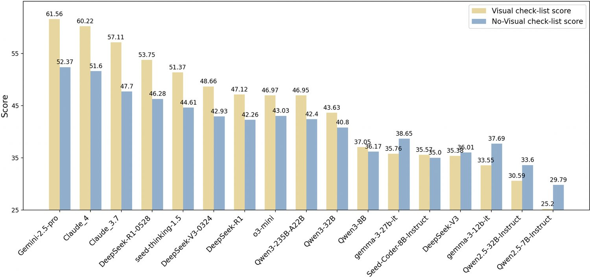
图 4：ArtifactsBench 上视觉导向分数与代码导向分数的相关性。强正相关说明能力是整体性的，也说明有必要同时评估这两个维度。
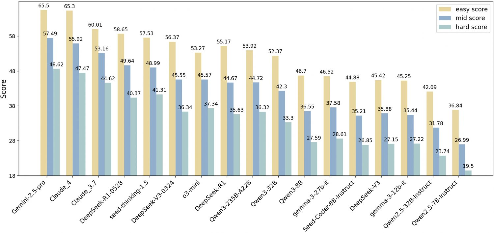
图 5：ArtifactsBench 各难度层级上的分数。
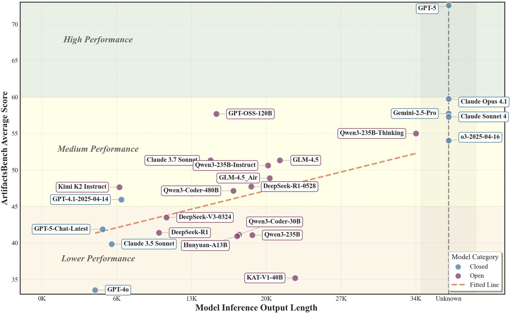
图 6：ArtifactsBench 上模型性能与回答长度的关系（以 Gemini-2.5-Pro 为评审）。整体呈正相关，但简洁、结构良好的输出仍可保持竞争力。
Human validation and ablations. We run a double-blind study on 280 queries and 6 models, judged by multiple front-end engineers. Agreement is measured by Pair ACC. Incorporating execution screenshots markedly improves agreement, and multiple screenshots better capture dynamics (Table 4). Replacing images with captions helps but remains inferior when visual capability is strong; removing the answer degrades quality, confirming the need for code-aware judging (Table 5).
人工验证与消融实验。我们在 280 条查询、6 个模型上开展双盲研究，由多名前端工程师评判。一致程度用 Pair ACC 度量。引入执行截图显著提升了与人类的一致率，多张截图能更好地捕捉动态变化（表 4）。用文字描述替代图像有所助益，但在视觉能力较强时仍不及直接看图；去掉回答则使质量下降，证实了代码感知评审的必要性（表 5）。
表 4：关于有无图像的多模态评审消融实验。
| Referee Models w/o img | Pair ACC | Referee Models w/ img | Pair ACC | Referee Models w/ imgs | Pair ACC |
|---|---|---|---|---|---|
| Qwen2.5-VL-72B | 61.80% | Qwen2.5-VL-72B | 68.08% | Qwen2.5-VL-72B | 71.34% |
| GPT-o4-mini | 72.41% | GPT-o4-mini | 76.25% | GPT-o4-mini | 79.41% |
| Gemini-2.5-pro | 79.06% | Gemini-2.5-pro | 87.10% | Gemini-2.5-pro | 90.95% |
表 5：关于视觉描述与图像、以及回答作用的消融实验。
| Referee Models w/o img | Pair ACC | Referee Models w/ imgs | Pair ACC |
|---|---|---|---|
| Qwen3-32B-Instruct | 64.12 | Qwen3-32B-Instruct w/ caption | 68.78 |
| Qwen2.5-VL-72B | 61.80 | Qwen2.5-VL-72B w/ caption | 66.14 |
| Gemini-2.5-pro | 79.06 | Gemini-2.5-pro w/ caption | 81.74 |
| Gemini-2.5-pro | 79.06 | Gemini-2.5-pro only w/ imgs | 74.94 |
| Gemini-2.5-pro | 79.06 | Gemini-2.5-pro only w/ caption | 70.56 |
In addition, Figure 6 illustrates the relationship between model performance and response length. While longer responses broadly correlate with higher scores (suggesting deeper planning helps), notable efficient models remain competitive with concise outputs—indicating quality over verbosity and the value of compact, well-structured solutions.
此外，图 6 展示了模型性能与回答长度之间的关系。虽然更长的回答大体对应更高的分数（说明更深的规划有帮助），但仍有若干高效模型凭借简洁的输出保持竞争力——这表明质量比篇幅更重要，紧凑且结构良好的解法同样有价值。
Cross-judge robustness and version stability. We adopt two SOTA referees with complementary strengths: the open-source Qwen2.5-VL-72B (transparent and reproducible) and the proprietary Gemini-2.5-Pro (higher-capacity reference). They induce highly consistent partial-order constraints over model rankings; residual differences concentrate among top systems, where the stronger referee offers finer resolution. Moreover, replacing the deprecated preview Gemini-2.5-Pro-0506 with the stable Gemini-2.5-Pro yields identical ordering constraints, confirming version stability (see Appendix Figure 11 and Appendix Figure 10).
跨评审鲁棒性与版本稳定性。我们采用两个优势互补的最先进评审：开源的 Qwen2.5-VL-72B（透明可复现）与闭源的 Gemini-2.5-Pro（容量更高的参照）。二者在模型排名上导出的偏序约束高度一致；残余差异集中在头部系统，其中更强的评审具有更细的分辨力。此外，把已弃用的预览版 Gemini-2.5-Pro-0506 替换为稳定的 Gemini-2.5-Pro 后，得到的排序约束完全相同，证实了版本稳定性（见附录图 11 与附录图 10）。
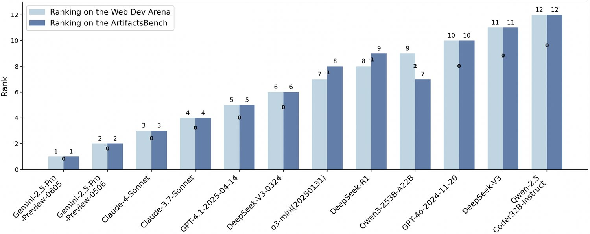
图 7：ArtifactsBench（由 Gemini-2.5-pro 评审）与基于人类偏好的 WebDev Arena 之间的排名相关性。二者的高度吻合验证了我们的自动评测框架所捕捉的性质，与真实用户对性能的感知相关。
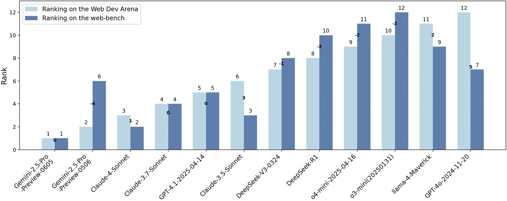
图 8：WebBench 与 WebDev Arena 的排名相关性。相比 ArtifactsBench（图 7），其吻合度更弱，说明此前的静态基准可能未能充分捕捉人类用户所看重的交互与动态特性。
WebDev Arena (Zhou et al., 2023)—a de-facto human-preference gold standard—validates alignment. ArtifactsBench attains 94.4% normalized Footrule consistency11 1 Based on the distance between rank vectors; closer to 1 is better. versus 69.4% for WebBench (Figures 7, 8), indicating stronger reflection of human priorities at scale. Beyond agreement, ArtifactsBench yields actionable diagnostics: for instance, o3-mini ranks slightly higher than human voting because it excels on static code-centric qualities (extensibility, robustness, runtime performance), surfacing strengths that human preference may underweight. We additionally include full leaderboards with both Gemini-2.5-Pro and Qwen2.5-VL-72B referees in the appendix for completeness, while key findings are reported here without deferral.
WebDev Arena（Zhou et al., 2023）作为事实上的黄金标准，用于验证一致性。ArtifactsBench 取得 94.4% 的归一化 Footrule 一致性（基于排序向量之间的 距离；越接近 1 越好），而 WebBench 为 69.4%（图 7、8），说明前者在规模化场景下更能反映人类的优先关切。除一致性之外，ArtifactsBench 还能给出可操作的诊断：例如 o3-mini 的排名略高于人类投票，因为它在静态代码导向的性质（可扩展性、鲁棒性、运行时性能）上表现突出，揭示了人类偏好可能低估的优势。我们还把以 Gemini-2.5-Pro 与 Qwen2.5-VL-72B 为评审的完整排行榜一并列入附录，而关键发现均在此给出，不作延后。
Benchmarks for Visual Code Generation. Foundational benchmarks (HumanEval (Chen et al., 2021), SWE-Bench (Jimenez et al., 2023)) assess algorithms/repositories but not visual fidelity, dynamics, and interaction. Visual-code efforts such as pix2code (Wüst et al., 2024) and Web2Code (Yun et al., 2024) target screenshot-to-code; WebBench (Xu et al., 2025) targets DOM alignment; FullFront (Sun et al., 2025) evaluates the development process; WebDev Arena (LMSYS Org, 2024) captures human preference. ArtifactsBench complements these by evaluating live, operable artifacts with complex dynamics via a checklist-driven protocol that yields interpretable diagnostics beyond a single score. It also covers structured graphics (StarVector (Rodriguez et al., 2023), LLM4SVG (Xing et al., 2025)) and dynamic scenes: instead of navigating existing environments (Open CaptchaWorld (Luo et al., 2025)), we assess generating such dynamics via snapshot-based checks (e.g., physics-based mini-games). Our snapshot-based check is designed to verify that required state transitions and interactive feedback truly occur, and to provide compact, reviewable evidence that enables consistent judging across models and tasks.
视觉代码生成基准。基础性基准（HumanEval（Chen et al., 2021）、SWE-Bench（Jimenez et al., 2023））评估的是算法与代码仓库，不涉及视觉保真度、动态性与交互。视觉代码方向的工作，如 pix2code（Wüst et al., 2024）与 Web2Code（Yun et al., 2024）面向截图转代码；WebBench（Xu et al., 2025）面向 DOM 对齐；FullFront（Sun et al., 2025）评估开发流程；WebDev Arena（LMSYS Org, 2024）捕捉人类偏好。ArtifactsBench 与之互补：通过清单驱动的协议评测具有复杂动态的、可实际操作的制品，并提供超越单一分数的可解释诊断。它还覆盖结构化图形（StarVector（Rodriguez et al., 2023）、LLM4SVG（Xing et al., 2025））与动态场景：不同于在既有环境中导航（Open CaptchaWorld（Luo et al., 2025）），我们评估的是通过基于快照的检查生成此类动态效果的能力（如基于物理的小游戏）。我们基于快照的检查旨在验证所需的状态转移与交互反馈确实发生，并提供紧凑、可复核的证据，使不同模型与任务之间的判断保持一致。
Evaluation Paradigms for Interactive Visual Artifacts. DOM/pixel similarity misses high-level semantics and interaction flow. Multimodal LLMs (Gemini Team & Google, 2023; OpenAI, 2023) enable code-aware visual judging within a structured protocol. While these models have shown promising results in perception and QA, they can suffer from hallucination, prompt sensitivity, limited awareness of engineering/code quality, and version drift (Zheng et al., 2023; Ge et al., 2023). Accordingly, ArtifactsBench adds structured safeguards—temporal snapshot evidence coupled with fine-grained, task-tailored checklists and a dual-referee protocol (Gemini-2.5-Pro and Qwen2.5-VL-72B)—to improve reliability and interpretability, while keeping this section focused on prior art.
交互式视觉制品的评测范式。DOM 或像素相似度无法捕捉高层语义与交互流程。多模态大语言模型（Gemini Team & Google, 2023; OpenAI, 2023）使得在结构化协议内做代码感知的视觉评判成为可能。尽管这些模型在感知与问答上表现不俗，却可能受到幻觉、提示敏感、工程与代码质量意识有限以及版本漂移的困扰（Zheng et al., 2023; Ge et al., 2023）。因此，ArtifactsBench 增加了结构化的保障措施——把时序快照证据与细粒度、任务定制的检查清单以及双评审方案（Gemini-2.5-Pro 与 Qwen2.5-VL-72B）结合起来，以提升可靠性与可解释性；本节则聚焦于已有工作本身。
We present ArtifactsBench, an automated benchmark for evaluating LLMs on dynamic visual artifacts, addressing static/non-visual gaps. Contributions: (i) a diverse, difficulty-calibrated set of 1,825 tasks; (ii) an automated, checklist-guided MLLM referee scoring code, visuals, and interaction. Across 30+ LLMs, scores align strongly with expert judgments and Web-Dev Arena, offering diagnostics on strengths/failure modes and advancing artifact generation.
我们提出 ArtifactsBench，一个用于评测 LLM 生成动态视觉制品的自动化基准，弥补了静态与非视觉评测的缺口。贡献包括：（i）一套多样且经过难度校准的 1,825 个任务；（ii）一个自动化的、由检查清单引导的多模态大语言模型评审，对代码、视觉与交互同时打分。在 30 余个 LLM 上，评分与专家判断及 WebDev Arena 高度吻合，并给出关于优势与失效模式的诊断，推动制品生成的发展。
Our team members contribute to the development of ArtifactsBench from the following perspectives:
团队成员从以下方面参与 ArtifactsBench 的建设：
First Autors
第一作者
| Chenchen Zhang, Tencent | Yuhang Li, Tencent |
Core Contributors — Algorithm Support
核心贡献者——算法支持
| Can Xu, Tencent | Jiaheng Liu, NJU | Ao Liu, Tencent |
| Changzhi Zhou, Tencent | Ken Deng, Independent | Dengpeng Wu, Tencent |
| Guanhua Huang, Tencent | Kejiao Li, Tencent | Qi Yi, Tencent |
| Ruibin Xiong, Tencent | Shihui Hu, Tencent | Yue Zhang, Tencent |
| Yuhao Jiang, Tencent | Zenan Xu, Tencent | Yuanxing Zhang, PKU |
Corresponding Authors
通讯作者
| Wiggin Zhou, Tencent | Chayse Zhou, Tencent | Fengzong Lian, Tencent |
| wigginzhou,chaysezhou,faxonlian@tencent.com | ||
Acknowledgements — Data and Front-End Technical Support (Alphabet Order)
致谢——数据与前端技术支持（按字母顺序）
| Bohui Zhai, Tencent | Guoxiang He, Tencent | Haotian Zhu, Tencent |
| Hebin Li, Tencent | Jie Zhao, Tencent | Le Zhang, Tencent |
| Lingyun Tan, Tencent | Pengyu Guo, Tencent | Xianshu Pang, Tencent |
| Yang Ruan, Tencent | Zhifeng Zhang, Tencent | Zhonghu Wang, Tencent |
| Ziyan Xu, Tencent | Zuopu Yin, Tencent |
While ArtifactsBench represents a significant step forward in the automated evaluation of LLM-generated visual code, we recognize its limitations, which in turn open up exciting avenues for future research.
尽管 ArtifactsBench 在 LLM 生成视觉代码的自动评测上迈出了重要一步，我们也认识到其局限，而这些局限正为未来研究打开了令人期待的方向。
Our current methodology evaluates dynamic behavior by capturing and analyzing a sequence of screenshots at fixed intervals. This approach effectively assesses many forms of interactivity. However, for highly complex, long-horizon, or state-dependent interactions (e.g., multi-step user workflows in a web application, or the nuanced physics in a game), this discrete sampling may not fully capture the fluidity, correctness, and robustness of the entire interactive experience. Future work could explore more sophisticated dynamic analysis techniques, such as programmatically interacting with the Document Object Model (DOM) to verify state transitions or employing video-based analysis to evaluate the entire user session, thereby enabling a more profound understanding of complex interaction logic.
我们当前的方法通过以固定间隔捕捉并分析一组截图来评估动态行为。这一做法能有效评估多种形式的交互性。然而，对于高度复杂、长时程或依赖状态的交互（例如 Web 应用中的多步用户工作流，或游戏中精细的物理效果），这种离散采样可能无法完整捕捉整个交互体验的流畅性、正确性与鲁棒性。未来工作可探索更精细的动态分析技术，例如以程序化方式与文档对象模型（DOM）交互以验证状态转移，或采用基于视频的分析来评估完整的用户会话，从而更深入地理解复杂的交互逻辑。
ArtifactsBench currently focuses on evaluating the quality of the final artifact generated in a single turn from a given prompt. This scope does not assess an LLM’s capability to function as an autonomous agent that can iteratively refine an artifact based on feedback, debug its own code in response to errors, or plan and execute a multi-step development process. These agentic capabilities are crucial for tackling real-world software engineering challenges. A promising direction for future research is to extend ArtifactsBench into an agentic evaluation framework. In such a setup, the model would need to engage in a multi-turn dialogue with a simulated environment (e.g., a user, a linter, or a debugger) to incrementally build, test, and enhance the visual artifact. This would provide a more realistic testbed for evaluating the end-to-end problem-solving abilities required for truly intelligent and collaborative code generation.
ArtifactsBench 目前聚焦于评测模型在单轮内依据给定提示所生成的最终制品的质量。这一范围并未考察 LLM 作为自主智能体的能力——即依据反馈迭代改进制品、针对错误调试自身代码，或规划并执行多步开发流程的能力。这些智能体能力对应对真实软件工程挑战至关重要。一个有前景的未来方向是把 ArtifactsBench 扩展为智能体式评测框架：在这一设置中，模型需要与模拟环境（如用户、代码检查工具或调试器）进行多轮对话，以增量地构建、测试并完善视觉制品。这将为评估真正智能且可协作的代码生成所需的端到端问题解决能力提供更加真实的试验场。
As shown in Table 3, Gemini-2.5-Pro achieves the highest overall score across both our open-source and proprietary human evaluations. Claude 4.0-Sonnet likewise approaches state-of-the-art performance, underscoring the substantial lead that top-tier proprietary multimodal systems currently maintain in this challenging domain.
如表 3 所示，Gemini-2.5-Pro 在我们的开源与闭源人工评测中均取得最高总分。Claude 4.0-Sonnet 同样逼近最先进水平，凸显了顶级闭源多模态系统当前在这一高难度领域所保持的显著领先。
Within the Qwen2.5 and Qwen3 model families, we observe a consistent trend: performance on ArtifactsBench scales positively with model capacity. Moreover, models engaging in extended inference—so-called “slow-thinkers”—tend to score higher, indicating that the intricate planning required for visual code generation benefits appreciably from deeper computational reasoning.
在 Qwen2.5 与 Qwen3 模型族内部，我们观察到一致的趋势：模型在 ArtifactsBench 上的表现随容量正向提升。此外，进行更长推理的模型——即所谓“慢思考”模型——得分往往更高，说明视觉代码生成所需的复杂规划明显受益于更深的计算推理。
Among the open-source contenders, DeepSeek-R1-0528 sets a new benchmark, demonstrating that models with robust code generation and general reasoning capabilities can excel in code-centric visualization tasks. We also note an important knowledge-distillation finding: DeepSeek-R1-Distill-Qwen-32B improves by only 3 percentage points over its base Qwen-2.5-32B, yet remains 5 points below Qwen3-32B. This suggests that distillation on a limited dataset may be insufficient to endow models with the robust, generalizable skills required for advanced visual-code synthesis. This result is in line with recent findings in knowledge distillation research, where it has been shown that dynamically adjusting the distillation data to focus on areas of large performance gaps between teacher and student models is more effective than using a static dataset (Liu et al., 2024b).
在开源竞争者中，DeepSeek-R1-0528 树立了新的标杆，表明具备强劲代码生成能力与通用推理能力的模型可以在代码中心的视觉化任务上表现出色。我们还注意到一项关于知识蒸馏的重要发现：DeepSeek-R1-Distill-Qwen-32B 相比其基座 Qwen-2.5-32B 仅提升 3 个百分点，却仍比 Qwen3-32B 低 5 分。这说明在有限数据集上做蒸馏，可能不足以赋予模型高级视觉代码合成所需的稳健、可泛化能力。该结果与知识蒸馏领域的近期发现一致：动态调整蒸馏数据、使其聚焦师生表现差距较大的方面，比使用静态数据集更为有效（Liu et al., 2024b）。
All models record their lowest scores on the Intensive Interactive cases within the static–dynamic classification tasks. They also perform worst on complex, project-level visualization scenarios—such as “Management System” cases—highlighting clear avenues for future improvement in these demanding settings.
在静态—动态分类任务中，所有模型的分数都在强交互类样例上跌至最低。它们在复杂的项目级可视化场景——例如“管理系统”类样例上也表现最差，凸显出在这些高要求场景中明确的未来改进方向。
Perhaps our most striking finding is that instruction-tuned generalist models outperform domain-specific counterparts. Specifically, Qwen-2.5-Instruct surpasses both the code-focused Qwen-2.5-coder and the vision-specialized Qwen2.5-VL-72B. This compellingly illustrates that producing high-quality visual artifacts is not a simple sum of isolated code generation and visual understanding abilities. Rather, it demands a higher-order synthesis of capabilities—including robust reasoning, nuanced instruction following, and an implicit sense of design aesthetics. These are precisely the holistic, meta-level skills that top-tier generalist models acquire through vast and diverse training, and which benchmarks like ArtifactsBench are uniquely poised to evaluate.
我们最引人注目的发现或许是：经指令微调的通用模型优于领域专用模型。具体地，Qwen-2.5-Instruct 同时超过了面向代码的 Qwen-2.5-coder 与面向视觉的 Qwen2.5-VL-72B。这有力说明，产出高质量视觉制品并非孤立的代码生成能力与视觉理解能力的简单相加。它要求一种更高阶的能力综合——包括稳健的推理、细腻的指令遵循，以及对设计美学的潜在感知。这些恰恰是顶级通用模型在海量而多样的训练中所获得的整体性、元层面技能，也正是 ArtifactsBench 这类基准最适合加以评测的对象。
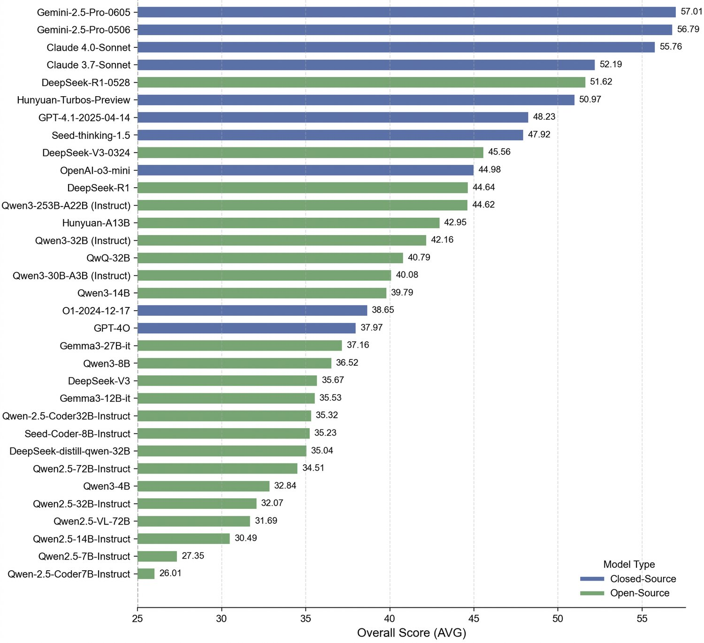
图 9：ArtifactsBench 竞争格局概览，由 Gemini-2.5-Pro-0506 评审打分。该图汇总了领先模型的总分（AVG），呈现当前最先进水平以及不同模型族之间的性能分布。
We categorize the 10 checklist items into two groups based on their evaluation dependencies: 5 vision-oriented checklists and 5 code-oriented checklists. As shown in Figure 4, The results demonstrate a positive correlation between vision and code scores, suggesting that model improvements tend to be comprehensive rather than isolated to specific capabilities. Focusing solely on visual scores or interactive experience may overlook critical strengths or weaknesses in the underlying code generation. Conversely, exclusive attention to code quality risks missing important visual aspects, leading to incomplete assessments. Furthermore, as model capabilities advance, they increasingly prioritize the visual presentation of generated code, thereby enhancing real-world usability.
我们按评测依据把 10 个检查清单条目分为两组：5 个视觉导向清单与 5 个代码导向清单。如图 4 所示，结果表明视觉分数与代码分数之间存在正相关，说明模型能力的提升往往是全面的，而非局限于某项特定能力。只关注视觉分数或交互体验，可能遗漏底层代码生成中的关键优劣；反之，只盯住代码质量，则可能错失重要的视觉方面，导致评估不完整。此外，随着模型能力演进，它们愈发重视所生成代码的视觉呈现，从而提升了真实可用性。
We split the benchmark into three tiers of increasing difficulty. As illustrated in Figure 5, even the best-performing models struggle to surpass 50 points on the most challenging subset, indicating that our benchmark remains far from saturation. Moreover, the models’ relative rankings remain consistent across all tiers, and each tier continues to offer strong discriminative power—demonstrating that our benchmark reliably differentiates model capabilities at every level of difficulty.
我们把基准划分为难度递增的三个层级。如图 5 所示，即便表现最好的模型在最难子集上也难以超过 50 分，说明本基准远未饱和。此外，各模型的相对排名在所有层级上保持一致，且每一层级仍保持很强的区分度——这表明本基准能在每个难度水平上可靠地区分模型能力。
To validate the fidelity of our automated MLLM-based evaluation, we conduct a rigorous human evaluation study. We randomly selected 280 queries, along with the corresponding data from 6 models, and have them independently scored by multiple engineers with extensive front-end development experience. The process follows a double-blind protocol: annotators remain unaware of the MLLM’s scores, and the samples appear in randomized order to mitigate bias. The final human ground-truth score represents the median of the individual annotators’ ratings.
为验证我们基于多模态大语言模型的自动评测的保真度，我们开展了一项严格的人工评测研究。我们随机抽取 280 条查询以及 6 个模型的对应数据，交由多名具备丰富前端开发经验的工程师独立打分。该过程遵循双盲协议：标注员不知道多模态大语言模型给出的分数，样本以随机顺序呈现以减轻偏差。最终的人类真值分数取各标注员评分的中位数。
To quantify the agreement between our automated referee and human experts, we compute the pairwise consistency rate, denoted as Pair ACC. For a given query with model responses, we can form unique pairs of responses. We then count the number of pairs for which the MLLM referee and the human judges agree on the rank ordering (i.e., which response is better). The consistency rate is the ratio of these concordant pairs to the total number of pairs. This metric allows us to select the most reliable MLLM referee and robustly demonstrates the strong correlation between our automated evaluation and expert human judgment.
为量化自动评审与人类专家的一致程度，我们计算两两一致率，记为 Pair ACC。对某条查询，若存在 个模型回答，则可构成 个不同的回答对。我们统计多模态大语言模型评审与人类评判在排序上（即哪个回答更好）达成一致的对数。一致率即这些一致对占总对数的比例。该指标既可用于挑选最可靠的多模态大语言模型评审，也稳健地证明了我们的自动评测与专家人类判断之间存在强相关。
We further compare the partial-order ranking induced by two state-of-the-art referee models: the closed-source Gemini-2.5-Pro-Preview-0506 and the open-source Qwen2.5-VL-72B. As illustrated in Figure 11, the two referees yield largely consistent order constraints over model performance. Residual differences are concentrated among top-tier systems, where the stronger referee exhibits finer discriminative power. This observation supports two conclusions: (1) our findings are robust to the choice of MLLM referee, and (2) stronger referees provide higher resolution at the head of the leaderboard without altering the overall competitive landscape.
我们进一步比较两个最先进评审模型所导出的偏序排名：闭源的 Gemini-2.5-Pro-Preview-0506 与开源的 Qwen2.5-VL-72B。如图 11 所示，两名评审在模型表现上给出的顺序约束大体一致。残余差异集中在头部系统，其中更强的评审展现出更细的分辨力。这一观察支持两点结论：（1）我们的发现对多模态大语言模型评审的选择是鲁棒的；（2）更强的评审能在排行榜头部提供更高分辨率，而不会改变整体竞争格局。
Given that Gemini-2.5-Pro-Preview-0506 has been deprecated, we additionally compare it with the stable Gemini-2.5-Pro release. As shown in Appendix Figure 10, the two versions induce identical partial-order constraints over model rankings on ArtifactsBench. This means every pairwise ordering decision is the same, and replacing the preview with the stable version does not change any leaderboard conclusions.
鉴于 Gemini-2.5-Pro-Preview-0506 已被弃用，我们额外将其与稳定的 Gemini-2.5-Pro 正式版作了比较。如附录图 10 所示，两个版本在 ArtifactsBench 上对模型排名导出的偏序约束完全相同。这意味着每一对排序判定都一致，用正式版替换预览版不会改变排行榜的任何结论。
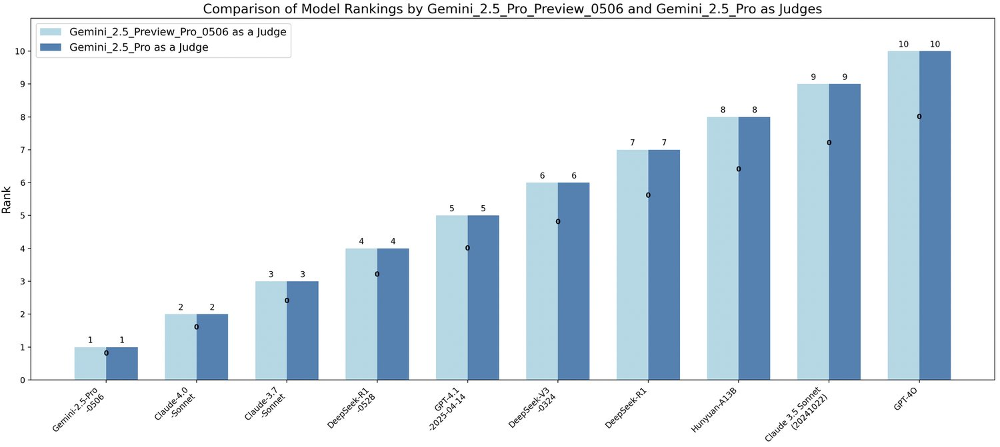
图 10：版本稳定性：Gemini-2.5-Pro-Preview-0506 与稳定的 Gemini-2.5-Pro。二者导出的偏序约束完全相同，排行榜结论得以保持。
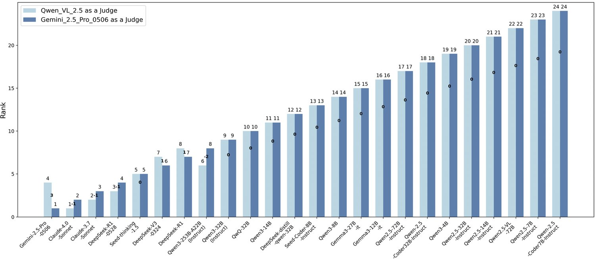
图 11：跨评审对比（Gemini-2.5-Pro-Preview-0506 与 Qwen2.5-VL-72B）：偏序高度一致，头部存在细微差异。
We present ablation studies in Tables 4 and 5 to examine the alignment between different referee models and human judgments. The experimental configurations include: (1) “w/o img” - inputting only the query and answer to the LLM without images; (2) “w/ img” - leveraging the model’s visual capability by providing the query, answer, and one execution screenshot; (3) “w/ imgs” - extending the “w/ img” configuration with multiple screenshots to capture dynamic visual effects; (4) “w/ caption” - replacing images with MLLM-generated descriptions; and (5) “only w/ imgs”/“only w/ caption” - removing the answer from the “w/ imgs” and “w/ caption” input configurations respectively.
我们在表 4 与表 5 中给出消融实验，以考察不同评审模型与人类判断的吻合程度。实验配置包括：（1）“w/o img”——只向 LLM 输入查询与回答，不含图像；（2）“w/ img”——利用模型的视觉能力，提供查询、回答与一张执行截图；（3）“w/ imgs”——在“w/ img”配置基础上扩展为多张截图，以捕捉动态视觉效果；（4）“w/ caption”——用多模态大语言模型生成的描述替换图像；（5）“only w/ imgs”/“only w/ caption”——分别在“w/ imgs”与“w/ caption”的输入配置中去掉回答。
Table 4 reveals two key findings: First, the significant improvement in pair accuracy when including execution screenshots demonstrates that multimodal LLMs effectively utilize visual information for more reasonable evaluation. Second, comparing columns 2 and 3 shows that multiple screenshots help models capture dynamic effects, further enhancing prediction accuracy. However, since referee models can extract additional strengths and weaknesses from the code-level perspective, their evaluation criteria may diverge from human judgments. This explains why even the strongest referee model, Gemini, shows some discrepancy in scoring consistency with human assessments, which simultaneously demonstrates ArtifactsBench’s advantage of comprehensively evaluating answers from multiple dimensions.
表 4 揭示了两项关键发现：其一，加入执行截图后两两准确率显著提升，说明多模态大语言模型能有效地利用视觉信息做出更合理的评测。其二，对比第 2 列与第 3 列可见，多张截图有助于模型捕捉动态效果，进一步提升预测准确率。然而，由于评审模型还能从代码层面挖掘额外的优势与不足，其评判标准可能与人类判断有所分歧。这也解释了为何即便是最强的评审模型 Gemini，在打分一致性上与人类评估仍存在一定差距，同时也体现了 ArtifactsBench 从多个维度综合评估回答的优势。
The first three rows of Table 5 reveal that describing execution screenshots as text inputs can improve the evaluation accuracy of large models. Nevertheless, when the model itself has strong visual analysis capabilities, directly inputting screenshots yields better performance. The last two rows of Table 5 indicate that evaluation effectiveness decreases when only providing the query and execution screenshots, confirming the necessity of including the answer in the input. In addition, we provide a detailed analysis of the consistency analysis between ArtifactsBench and WebDev Arena in the appendix.
表 5 的前三行显示，把执行截图转写为文本输入可以提升大模型的评测准确率。不过，当模型本身具备较强的视觉分析能力时，直接输入截图效果更好。表 5 的最后两行表明，只提供查询与执行截图时评测效果下降，证实了在输入中包含回答的必要性。此外，我们还在附录中给出了 ArtifactsBench 与 WebDev Arena 一致性分析的详细内容。
We release dataset specs, checklist templates, evaluation scripts, and referee settings; future work targets richer dynamics beyond discrete screenshots, agentic multi-turn self-debugging, and broader artifact domains.
我们公开数据集规格、检查清单模板、评测脚本与评审设置；未来工作面向超越离散截图的更丰富动态性、智能体式的多轮自调试，以及更广的制品领域。
Table 6 and 7 present the detailed evaluation results from two distinct MLLM-as-a-Judge referees, Gemini-2.5-Pro and Qwen2.5-VL-72B, respectively, assessing multiple mainstream large language models on the ArtifactsBench benchmark. Gemini-2.5-Pro, as a leading closed-source multimodal model, provides a high-accuracy benchmarking standard, while the open-source Qwen2.5-VL-72B offers a more cost-effective alternative.
表 6 与表 7 分别给出两个不同的“以多模态大语言模型为评审”的评审——Gemini-2.5-Pro 与 Qwen2.5-VL-72B——在 ArtifactsBench 基准上评测多个主流大语言模型的详细结果。Gemini-2.5-Pro 作为领先的闭源多模态模型，提供了高精度的基准参照；而开源的 Qwen2.5-VL-72B 则提供了更具性价比的替代方案。
The results demonstrate a high degree of consistency in the model rankings computed by these two referee models, despite differences in their architectures and capabilities. This consistency not only validates the stability of the ArtifactsBench evaluation metrics but also indicates a convergent consensus among multimodal experts in judging code generation quality. Nevertheless, minor discrepancies are observed in the fine-grained scoring of certain complex interactive tasks, reflecting potential cognitive biases in how different MLLMs interpret long-horizon interaction logic and dynamic visual feedback.
结果表明，尽管两个评审模型的架构与能力不同，它们计算出的模型排名具有很高的一致性。这种一致性既验证了 ArtifactsBench 评测指标的稳定性，也说明多模态专家在评判代码生成质量上正趋于共识。不过，在某些复杂交互任务的细粒度打分上仍存在细微差异，反映出不同多模态大语言模型在理解长时程交互逻辑与动态视觉反馈时可能存在认知偏差。
| MODEL | IFLEN | SCORE | |||||||||
| SV | MMD | HD | II | GAME | SVG | WEB | SI | MS | AVG | ||
| Closed-Source Large Language Models | |||||||||||
| GPT-5 | – | 72.24 | 79.82 | 75.17 | 69.81 | 77.89 | 73.40 | 71.31 | 79.41 | 64.95 | 72.55 |
| Claude-opus-4-1 | – | 58.07 | 60.47 | 61.35 | 59.42 | 61.63 | 57.03 | 60.11 | 58.87 | 57.43 | 59.76 |
| Gemini-2.5-Pro | – | 60.14 | 59.18 | 58.71 | 55.62 | 58.38 | 65.33 | 58.12 | 55.54 | 53.18 | 57.74 |
| Claude Sonnet 4 (20250514) | – | 56.82 | 60.06 | 60.08 | 55.16 | 57.98 | 53.85 | 58.36 | 58.35 | 55.38 | 57.28 |
| o3-2025-04-16 | – | 54.90 | 56.88 | 55.92 | 51.85 | 54.33 | 56.37 | 52.95 | 55.75 | 50.21 | 54.04 |
| GPT-4.1-2025-04-14 | 7290.94 | 43.81 | 47.35 | 47.28 | 45.92 | 49.30 | 42.47 | 46.11 | 45.39 | 41.05 | 45.95 |
| GPT-4o | 4882.36 | 34.91 | 33.59 | 35.74 | 31.30 | 33.04 | 33.75 | 34.22 | 31.44 | 32.10 | 33.54 |
| Open-Source Large Language Models | |||||||||||
| GPT-OSS-120B | 16018.79 | 58.11 | 56.78 | 58.90 | 54.93 | 53.88 | 54.19 | 58.77 | 57.69 | 56.97 | 56.91 |
| Qwen3-235B-A22B-Thinking-2507 | 34357.84 | 53.63 | 55.66 | 56.90 | 54.32 | 56.35 | 44.80 | 55.90 | 57.35 | 54.09 | 55.01 |
| GLM-4.5 | 21854.10 | 51.07 | 54.94 | 53.10 | 49.68 | 54.79 | 51.79 | 51.66 | 52.06 | 47.30 | 51.33 |
| Claude 3.7 Sonnet (20250219) | 15480.06 | 49.76 | 51.64 | 53.17 | 50.79 | 51.11 | 45.37 | 53.52 | 50.81 | 51.74 | 51.32 |
| Qwen3-235B-A22B-Instruct-2507 | 20765.47 | 48.35 | 50.37 | 53.03 | 50.16 | 50.67 | 40.41 | 52.19 | 50.24 | 50.83 | 50.62 |
| GLM-4.5_Air | 20925.02 | 48.26 | 52.53 | 51.70 | 46.44 | 52.79 | 48.41 | 49.70 | 55.60 | 44.40 | 48.90 |
| DeepSeek-R1-0528 | 19215.71 | 48.11 | 53.32 | 49.54 | 45.45 | 50.46 | 45.06 | 47.86 | 54.08 | 42.69 | 47.73 |
| Kimi K2 Instruct | 7116.99 | 50.11 | 51.28 | 49.88 | 44.31 | 47.08 | 50.61 | 46.81 | 48.88 | 46.15 | 47.65 |
| Qwen3-Coder-480B-A35B-Instruct | 17581.53 | 46.32 | 50.77 | 48.68 | 45.99 | 49.27 | 40.18 | 48.11 | 49.66 | 46.06 | 47.15 |
| DeepSeek-V3-0324 | 11443.06 | 44.04 | 43.47 | 46.82 | 40.95 | 45.29 | 40.20 | 45.56 | 37.22 | 42.17 | 43.50 |
| DeepSeek-R1 | 10751.63 | 42.99 | 43.75 | 43.69 | 38.68 | 40.89 | 42.43 | 41.91 | 40.80 | 39.82 | 41.41 |
| Qwen3-235B-A22B | 19314.92 | 42.75 | 42.03 | 43.01 | 38.76 | 40.68 | 40.15 | 42.62 | 38.92 | 39.39 | 41.09 |
| hunyuan-A13B | 17924.89 | 41.09 | 41.73 | 42.14 | 39.94 | 40.84 | 39.87 | 42.34 | 37.35 | 40.27 | 40.95 |
| Claude 3.5 Sonnet (20241022) | 6391.96 | 41.44 | 42.08 | 42.40 | 36.95 | 38.46 | 41.94 | 41.26 | 39.43 | 38.17 | 39.85 |
| KAT-V1-40B | 23262.57 | 34.34 | 37.67 | 38.01 | 33.32 | 33.42 | 28.20 | 35.84 | 37.17 | 35.78 | 35.21 |
表 6：由 Gemini-2.5-Pro 评审打分的 ArtifactsBench 详细评测结果。性能按交互强度（SV：静态视觉；MMD：轻中度动态；HD：高动态；II：强交互）与任务类别（GAME、SVG、WEB、SI：仿真；MS：管理系统）细分。AVG 为全局平均分，IFLEN 表示平均回答长度。头部闭源多模态模型整体领先，性能随模型容量提升。
| RANK | MODEL | INSTITUTION | AVG RESPONSE LENGTH | QWEN2.5-VL-72B SCORE |
| Open-Source Large Language Models | ||||
| 1 | Qwen2.5 7B-Instruct | Qwen | 7905.21 | 42.72 |
| 2 | Qwen2.5 14B-Instruct | Qwen | 6334.34 | 44.76 |
| 3 | Qwen2.5 32B-Instruct | Qwen | 5115.49 | 46.09 |
| 4 | Qwen2.5 72B-Instruct | Qwen | 6029.47 | 51.30 |
| 5 | Qwen2.5-VL-72B | Qwen | 3539.15 | 44.45 |
| 6 | QwQ-32B | Qwen | 20232.53 | 60.41 |
| 7 | Qwen3-4B | Qwen | 35479.79 | 48.11 |
| 8 | Qwen3-8B | Qwen | 22319.97 | 56.29 |
| 9 | Qwen3-14B | Qwen | 15118.26 | 59.97 |
| 10 | Qwen3-32B (Instruct) | Qwen | 17394.15 | 63.14 |
| 12 | Qwen3-30B-A3B (Base) | Qwen | 35679.24 | 23.43 |
| 13 | Qwen3-253B-A22B (Instruct) | Qwen | 19400.61 | 66.35 |
| 14 | Qwen-2.5-Coder7B-Instruct | Qwen | 5800.23 | 34.57 |
| 15 | Qwen-2.5-Coder32B-Instruct | Qwen | 6318.59 | 49.72 |
| 16 | DeepSeek-R1 | DeepSeek | 10754.69 | 66.22 |
| 17 | DeepSeek-R1-0528 | DeepSeek | 20780.42 | 73.78 |
| 18 | DeepSeek-V3-0324 | DeepSeek | 11455.42 | 66.27 |
| 19 | DeepSeek-distill-qwen-32B | DeepSeek | 9249.36 | 57.14 |
| 20 | Gemma3-12B-it | 7955.42 | 52.49 | |
| 21 | Gemma3-27B-it | 7912.14 | 52.99 | |
| 22 | Seed-Coder-8B-Instruct | ByteDance | 8934.07 | 56.73 |
| Closed-Source Large Language Models | ||||
| 23 | Seed-thinking-1.5 | ByteDance | 14823.72 | 68.74 |
| 24 | Claude 3.7 | Anthropic | 15470.66 | 73.80 |
| 25 | Claude 4.0-Sonnet | Anthropic | 20633.88 | 78.86 |
| 26 | Gemini-2.5-Pro-0506 | – | 71.01 | |
表 7：以 Qwen2.5-VL-72B 作为多模态大语言模型评审时在 ArtifactsBench 上的评测结果。表中给出基于多维度综合评估的模型排名。RANK 表示评测顺序中的位次，AVG RESPONSE LENGTH 表示模型回答的平均长度，QWEN2.5-VL-72B SCORE 表示以 Qwen2.5-VL-72B 作为多模态评审时的评测分数。
We use the following prompt to filter the quality of queries, with the aim of selecting high-quality, practical, complete, and privacy-free queries.
我们使用如下提示词对查询质量进行过滤，目的是筛选出高质量、实用、完整且不涉及隐私的查询。
图 12：查询质量过滤所用的提示词。
We use Gemini-2.5-Pro to classify queries, and the specific prompt is shown in Figures 13 and 14. They only require a query as input.
我们使用 Gemini-2.5-Pro 对查询进行分类，具体提示词如图 13、14 所示。它们只需要一条查询作为输入。
图 13：类别分类所用的提示词。
图 14：视觉分类所用的提示词。
We present the prompt for generating the checklist in Figures 15 and 16, which takes a query as input. After manual review, it will be put into use. The final scoring prompt, shown in Figure 17, requires the query, answer, and checklist as input.
我们在图 15、16 中给出生成检查清单所用的提示词，其输入为一条查询。经人工审核后投入使用。最终打分提示词如图 17 所示，需要查询、回答与检查清单作为输入。
图 15：视觉分类提示词的第一部分
图 16：视觉分类提示词的第二部分。
图 17：最终打分提示词。